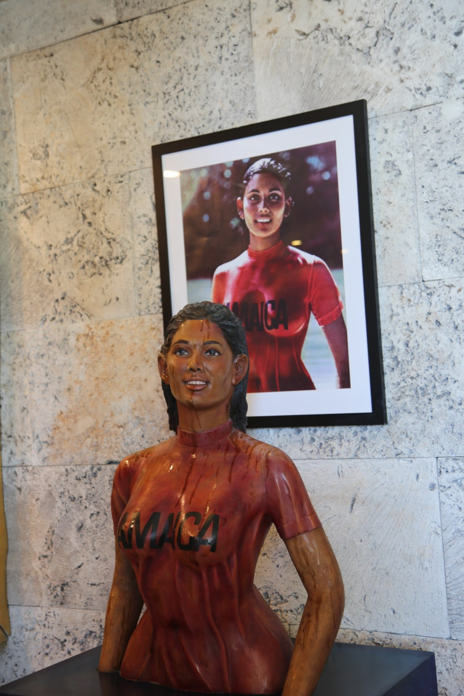

S Hotel · Kingston · 2024
Sintra Bronte
Portrait sculpture · Recycled materials

Commissioned by hotelier Christopher Issa, this portrait by Scheed Cole and his team honours Sintra Bronte, the Trinidadian model featured in Jamaica’s iconic 1972 tourism campaign. Unveiled at Strings Restaurant at S Hotel Kingston in May 2024, the sculpture recreates her emergence from the water wearing the recognisable Jamaica T-shirt. The team used recycled materials, including plastic bags and cardboard.
View All Press